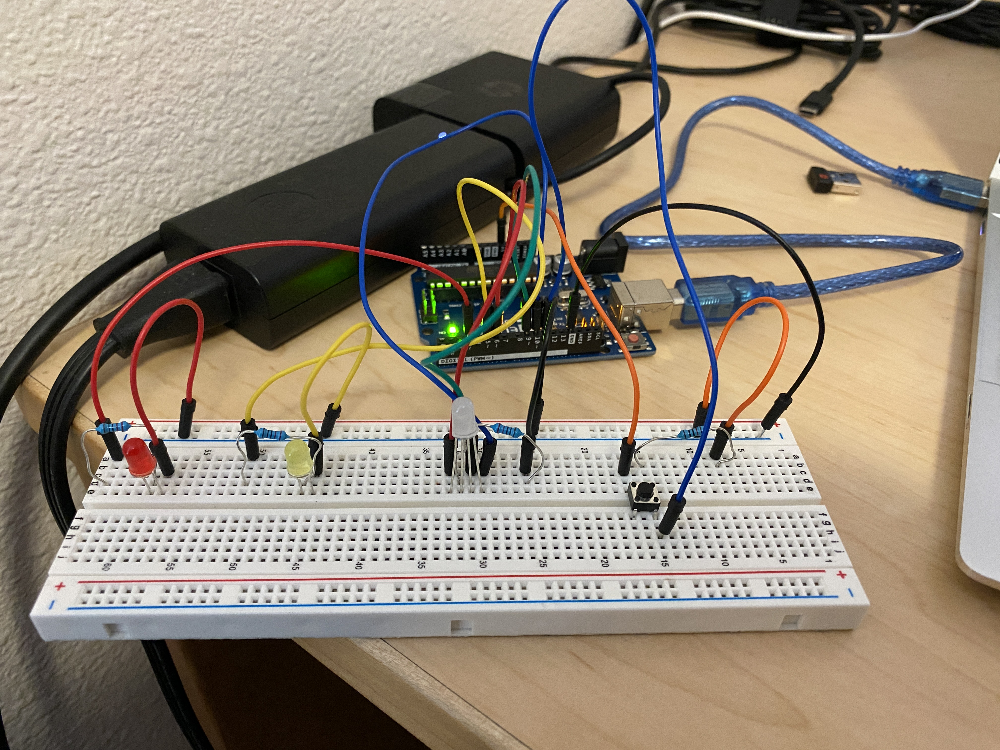
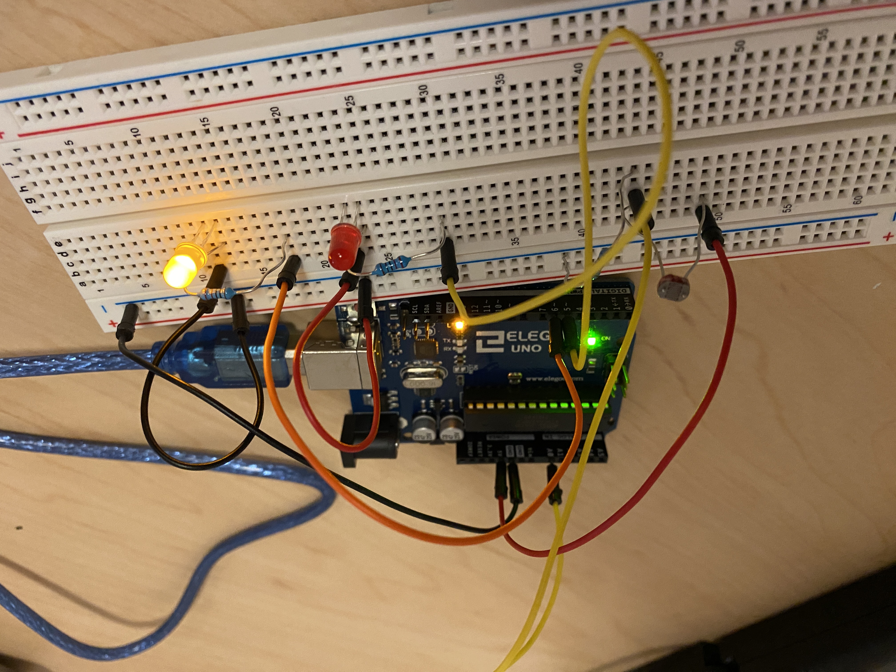
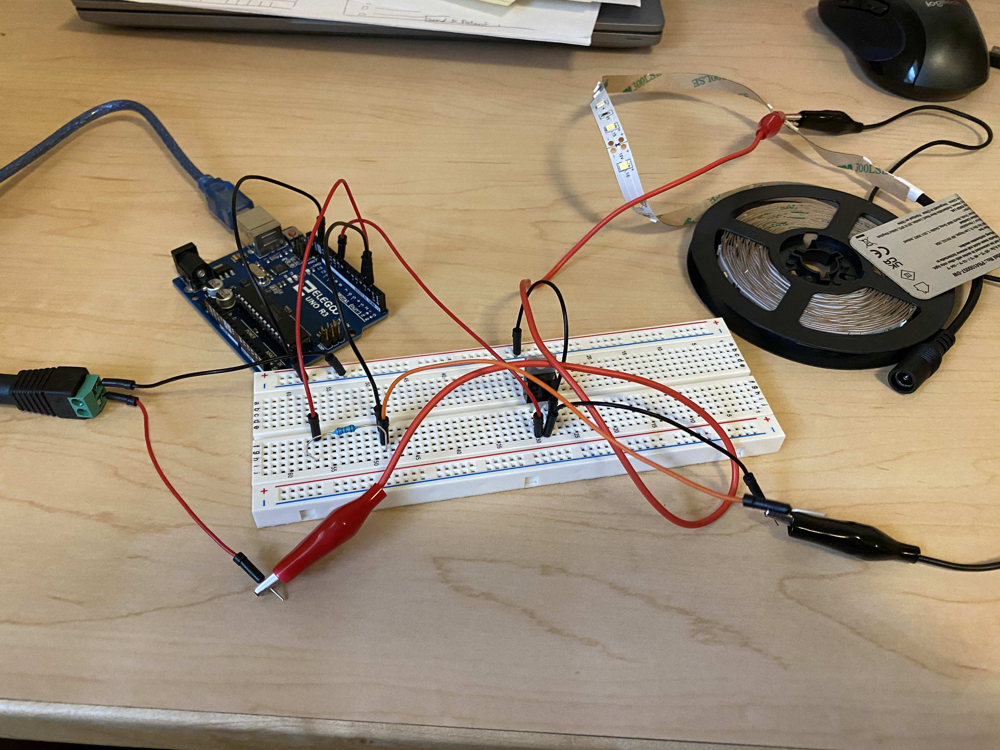
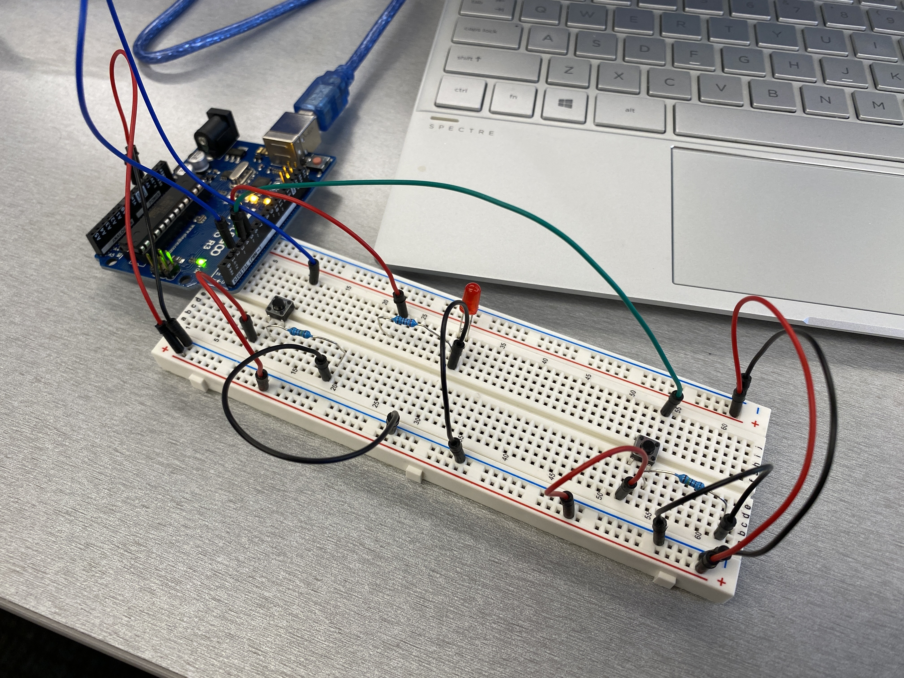

Assignment 1: Blink!

Assignment 1 was circuit that used 3 LEDs to blink independently.
Assignment 2: Fade!
Assignment 2 was a circuit that fades 3 LEDs on and off with the click of a button.
Assignment 3: Input Output!
Assignment 3 was a circuit that uses a photoresistor to control 2 LEDs.
Assignment 4: Libraries!

Assignment 4 was a circuit that uses capacitive touch to control a servo motor.
Assignment 5: High(er) voltage and transistors!
Assignment 5 was a circuit that uses capacitive touch and a transistor to control an LED strip.
Assignment 6: Talking to the web!
Assignment 6 was a circuit that uses buttons to play a game and has an LED that responds to keys pressed on the laptop.
Final Project Proposal
For my final project I plan to make a...